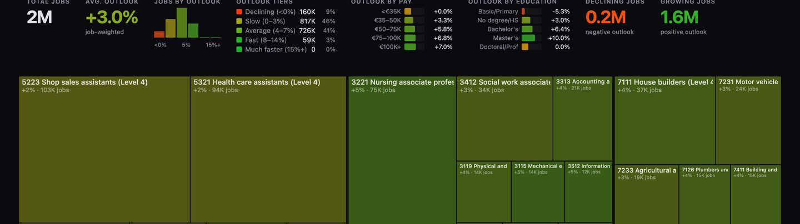
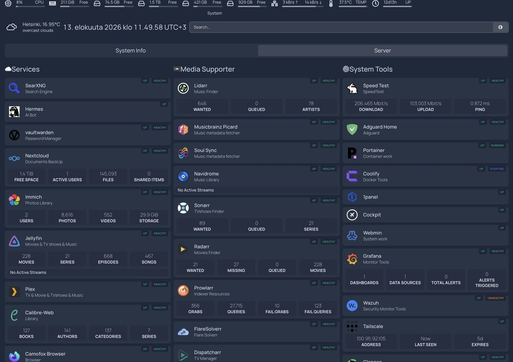

Neljä valittua projektia
Tekoälyjärjestelmiä, tuotekehitystä, tutkittavaa dataa ja niiden infrastruktuuria.
01 JobsResearch
10/2025 — presentTekoälyosumat tarkistettavin perusteluin
Ainoa tekijä — 8 tekoälyagentin tiimin vetäjä, tekoälyarkkitehti ja full-stack-kehittäjä
Työpaikkailmoitukset ovat hajallaan, eikä pelkkä pistemäärä selitä sopivuutta. Rakensin CV-pohjaisen arvioinnin, yritystutkimuksen ja hakemuskirjeet samaan sovellukseen, joka on kerännyt yli 100 000 ilmoitusta viidestä lähteestä.
- Pisteet + perustelut
- Semanttinen haku
- Useita mallipalveluja
- Python
- React
- AI agents
- Vector embeddings
- PostgreSQL
- Docker
 Avaa täysikokoisena ↗
Avaa täysikokoisena ↗Katso tarkemmin: mallivalinta ja toimintokohtaiset rajat tekevät tekoälykerroksesta säädettävän. Avaa kuva tarkastellaksesi asetuksia. 02 CLboost
01/2026 — 05/2026Tekoälyluonnoksesta muokattavaksi hakemukseksi
Frontend- ja DevOps-vetäjä — 183 / 263 committia, neljän hengen tiimi
Tuotettu kirje tarvitsee ympärilleen käytettävän tuotteen. Johdin frontend- ja DevOps-työtä: kuuden kielen käyttöliittymä, muokattava tulos ja toistettava julkaisuputki.
- 6 käyttöliittymäkieltä
- RTL-asettelut
- Tallennettu päästä päähän -demo
- Java
- Spring Boot
- Vaadin
- Gemini
- Docker
Katso todellinen työnkulku: anna hakemuksen taustatiedot, tuota kirje ja tarkista tulos. Keskeytä video tai tarkastele vaihetta videosäätimillä. 03 Fi-Job-Maps
03/2026Tee työmarkkinoista tutkittavat
Ainoa tekijä, full-stack-kehittäjä ja datainsinööri — 45 / 45 committia · 14 GitHub-tähteä
Ammattitilastoja on vaikea vertailla taulukoissa. Mukautin olemassa olevan puukarttapohjan Suomen dataan ja lisäsin Python-dataputken sekä tekoälyaltistuksen arviot.
- 459 ammattitietuetta
- Jäljitettävät datalähteet
- Julkinen interaktiivinen kartta
- Python
- StatFin PxWeb
- Data visualisation
- AI exposure

Avaa täysikokoisena ↗Lue kuvaa: ruudun pinta-ala kuvaa työllisyyttä ja väri valittua mittaria. Tekoälyaltistus on arvio, ei ennuste työpaikkojen menetyksistä. 04 Oma Linux-palvelinympäristö
Ympäristö omien palvelujen julkaisuun, valvontaan ja käyttöön
Oma infrastruktuuri · Linux-ylläpito ja itse isännöidyt palvelut
Ubuntu-palvelimeni yhdistää omat sovellukset, julkaisutyökalut ja valvonnan samaan ympäristöön. Hallintanäkymä kokoaa haku-, tiedosto-, kuva- ja mediapalvelut sekä niiden ylläpitotyökalut.
- Ubuntu 24.04 LTS
- Prometheus + Grafana
- Itse isännöidyt sovellukset
- Ubuntu
- Linux
- Docker
- Coolify
- Portainer
- Prometheus
- Grafana

Avaa täysikokoisena ↗Oma palvelunäkymäni elokuulta 2026. Tilamerkinnät ja käyttöluvut kuvaavat kuvakaappauksen hetkeä, eivät nykyistä saatavuutta.